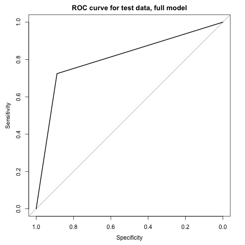

Suicide is the second leading cause of the death worldwide among people ages 15-29 (WHO). In particular, young people often the internet to obtain mental health support (Horgan 2009). In this project, we examine the expression of suicidal ideation on Reddit, a popular online message board aggregator that hosts discussion on user-created topics in smaller sub-boards (known as “subreddits”). Notably, some subreddits are used to provide and ask for mental health support, and many users share deeply personal information, including thoughts of suicide.
Here, we develop a logistic regression model that scores text posts from mental health subreddits for the presence of suicidal ideation. Previous work on suicidal ideation among Reddit users incorrectly assumed that popular mental health subreddits other than r/SuicideWatch, a subreddit dedicated to helping suicidal users, do not contain suicidal posts (de Choudhury 2015). As such, developing reliable identification methods for suicidal ideation in text posts is an important step to improve future work on admissions of suicidal ideation on the internet. Our results suggest that the proportion of suicidal posts in r/depression, the most popular mental health subreddit, is at least 8%. Our analysis suggests that suicidal ideation is associated with longer posts with more sentences, more negative sentiment, higher counts of the words “die” and “kill”, and lower counts of the word “advice”.
Previous work in suicidal ideation on Reddit by de Choudhury (2015) identified several characteristics of the posts that users who eventually post in SuicideWatch, a proxy measure for suicidal ideation. Here, we first seek to confirm that the same patterns are upheld in users that make suicidal posts and comments to mental health subreddits generally. Secondly, we use the variables that appear to be predictive to create multiple logistic regression models using the training set, and select the best model using backwards stepwise selection. Finally, we calculate the sensitivity and specificity of the best logistic regression model on both the training and test sets, based on a random sample of posts made in June 2016 obtained from r/depression.
Data was collected in three stages. First, we obtained 95 submissions, randomly sampled from a set of the largest mental health subreddits excluding r/depression, using the PRAW python package, which contains a function for randomly sampling submissions from subreddits, as well as a function for randomly sampling a subreddit from a given list of subreddits (scraped by Lacey). The posts were selected by first randomly selecting a subreddit from a manually-created list of the 20 largest mental health subreddits, excluding r/depression, then randomly sampling a post from that subreddit. Each of these was scored for suicidal ideation (by Lacey and Linda). Second, we scraped all submissions and comments from r/depression made between June 1-30, 2016, as well as all replies to submissions made between June 1-30, 2016, using a Python subreddit archiver, subredditarchive.py (scraped by Linda). From this dataset, a second set of submissions and comments was scored for suicidal ideation (by Lacey and Linda).
Because there were relatively few suicidal posts in the first two training sets (66 out of over 700), a phrase-matching classification algorithm (developed by Lacey and coded by Lacey and Linda) was written to enrich the training sets with additional suicidal posts from the June 2016 dataset. The phrase-matching algorithm works by searching posts for matches to a dictionary phrases that indicated suicidal ideation in the posts in the first two training sets. The phrase-matching algorithm had very high specificity when applied to the June 2016 dataset, identifying only 1 false positive out of 385 posts labeled as suicidal (work done by Lacey). However, its sensitivity is unknown.
To create the final dataset, we combined the hand-scored submissions from multiple mental health subreddits and the hand-scored submissions and comments from r/depression in June for which the suicidal scores matched for both Lacey and Linda, with the suicidal posts identified by phrase-matching algorithm from the June 2016 r/depression posts. The final dataset contained 611 suicidal posts and 757 non-suicidal posts. 75% of the dataset was then randomly sampled into a training set used to create the model, while the other 25% was reserved as a test set.
Exploratory analysis was performed by examining tables and plots of the observed data. Exploratory data analysis was used to perform quality control on the data and determine the predictor variables for the the logistic regression model. Several R packages were used to measure aspects of the text posts during exploratory analysis, though only one was ultimately useful for the final model.
To score the posts for readability, we used the korpus package to score each post for Flesch-Kincaid Grade Level, a standard measure of how difficult a passage is to read in English. Scores range from -3.40 and above, with the score roughly corresponding to the US grade level in difficult. For example, text with a score of “13” should be readable by a first-year college student, while text with a score of “1” would be readable by a first-grade student. To avoid negative values, linear transformation of the readability, age, was then used in lieu of the grade-level, using the korpus package.
Here, we use logistic regression as the analysis framework. Although there are several other binary classification algorithms, such as support vector machines, discriminant analysis, and random forests that would be potentially useful for determining more complex relationships between predictors and the outcome, they suffer some drawbacks that make them unsuitable for this project. First, these algorithms are more difficult to interpret (Hastie et al 2001), and thus the insights gleaned from such a model may be of limited public health use. Furthermore, it has been argued that, in practice, the performance of logistic regression to more complex methods like random forests is comparable (Hand 2006, Ruiz et al 2007). As such, logistic regression was ultimately chosen as it is a relatively easy-to-understand framework.
The predictive variables were chosen on the basis of the exploratory analysis, prior knowledge of characteristics of suicidal posts identified by de Choudhury (2015), and the drop-in-deviance test. Coefficients were estimated using iteratively reweighted least squares.
All analyses performed in this manuscript are reproduced in the R markdown file Code_Markdown.Rmd. To reproduce the results exactly, the analysis must be performed on the cached data, as many of the text posts were scored by hand by human raters.
Several patterns seemed to emerge from the exploratory analysis. Previous work on Reddit mental health boards showed that text posts from suicidal users has decreased readability and higher word counts (de Choudhury 2015). Both patterns are replicated in our data (Fig.1). Furthermore, the sentiment of suicidal posts seemed to be much more negative, and the magnitude of the score indicated that suicidal posts were longer (Fig. 1). There were also word choice differences for suicidal and non-suicidal posts. For example, while “die” and “kill” were much more frequently used in suicidal text, non-suicidal text was more likely to contain second-person pronouns like “you” or “your”. (To make the predictors appear linearly-related to the log odds, all predictors were log-transformed.)
To start with, we created a full model using all the predictors on a training set containing 75% of the posts, and used backwards stepwise selection and the drop-in-deviance test to choose the best model (Fig. 2). The final model is
\begin{equation} \begin{split} logit(\pi) &= \beta_0 + \beta_1*age + \beta_2*want + \beta_3 person + \ &\beta_4 * positive + \beta_5 * die + \beta_6 * anymore + B_7life + B_8*fucking +\ &\beta_9*second pronouns + \beta_10 * job \end{split} \end{equation}
where \(\pi\) is the probability of suicidal ideation in the text; \(logit(\pi)\) is the log-odds of a text containing suicidal ideation; \(\beta_0\) is the intercept; \(\beta_1, \beta_2-\beta_8\) are the effects on the log-odds of probability of suicidal ideation in the text associated with a change of 1 unit in the log-counts of the words "want", "person", "positive", "die", "anymore", "life", and "fucking", respectively, assuming the log-counts of the other words are held constant; \(\beta_9\) is the the effect on the log-odds of probability of suicidal ideation in the text associated with a change of 1 unit in the log-counts of the second-person pronouns; and \(\beta_{10}\) is the effects on the log-odds of probability of suicidal ideation in the text associated with a change of 1 unit in the log-counts of the word “job” or strings containing “employ”.
The Flesch-Kincaid Readability Score (which has been linearly transformed to age in the model) was significant (p = 0.006699). A change of one unit in the readability score would correspond to a change of 0.5870 (95% CI = 0.172,1.02) in the log-odds of probability of suicidal ideation. That is, for each additional grade-level in the reading difficult of a post, we would expect that the odds of suicidal ideation in that post increases by a factor of (exp(0.5870)- 1) = 1.80.
The association between suicidal ideation and the log-counts of the words “want” (p < 2e-16), “die” (p = 1.61e-15), “anymore” (p < 4.15e-06), and second-person pronouns (p = 6.08e-05) is highly significant. For example, an additional appearance of the word “want” in the text would correspond to an increase of 1.6681 (95% CI = (1.28,2.07)) in the log-odds probability of suicidal ideation in the text, assuming all other variables are held constant, while a unit increase in the log-count in the second-person pronouns would result in a decrease of -0.4770 (95% CI = 0.172,1.02) in the log-odds probability of suicidal ideation. For details, see Table 1.
To assess the model fit and detect influential points, we performed several diagnostic tests. First, we checked for collinearity by calculating the variance inflation factor (VIF) of each of the predictors, and removed predictors from the full model that had VIF >2.5 (UCLA). We also checked for influential points using deviance residuals and hat diagonals. 4 influential points, for which at least one predictor was not significant without it in the dataset, were removed prior to the final model selection. Finally, we assessed the degree to data met the model assumptions by determining which of the predictors were linearly-related to the log-odds of the probability of the text containing suicidal ideation, and removed one predictive variable, the log-counts of the word “kill”, that was obviously not linear. For details, see the RMarkdown code.
Finally, to test the validity of the model, we compared its sensitivity and specificity on the training set (n = 1024 posts) and test set (n = 344 posts) from r/depression. The ROC and AUC (Training = 0.8135, Test = 0.8063) were comparable for both sets, indicating the model validity is probably accurate. (Fig.3)
Our analysis is limited by several factors. Most significantly, most of the suicidal posts in the dataset were not randomly sampled and may not be representative of the population of suicidal text posts. Because the training set of the randomly sampled hand-classified text was extremely unbalanced, with only 65 suicidal posts and ~700 non-suicidal, the phrase-matching algorithm was used to enrich the set of suicidal texts. This means that the occurrence of the words used in the phrase-matching classifier are overrepresented in the suicidal posts in the training set relative to actual suicidal posts on Reddit, implying that the significance of the coefficients for the suicidal-associated words is perhaps much lower. A direction for future work, then, might be to use alternative logistic regression methods that are especially well-suited to classifying unbalanced with rare outcomes (King and Zheng 2009).
Furthermore, three of the the predictors, the log- word counts for ‘fucking’, ‘die’, and ‘anymore’, were not linearly-related to the log-odds of the probability of the text being suicidal. However, they were were retained because the model’s predictive power was greatly reduced without them (Drop-in-Deviance = 318.26, \(\Delta\) df = 4, P(\(\chi^2 \geq 2.2e-16\)), with the AUC for the training set being 0.6842 under the reduced the model. A consequence of including predictor variables in the model that don’t satisfy the model assumptions, the model estimates for the coefficient are probably further biased (Department of Statistics, Pennsylvania State University).
Thirdly, we used only the main body of the text of the post to predict suicidal ideation. Information from other variables, like the title of the submission or thread, the number of comments, and the number of upvotes and downvotes may also be viable predictors for a suicide detection text classifier, though adding such predictors may limit the usefulness of such a model to Reddit or similar message boards. Furthermore, our model assumes fixed effects of each of the predictors, whereas a mixed or random effects model may have also been effective. Also, backwards subset selection is not guaranteed to find the optimal model, though it is relatively computationally efficient compared to best subsets selection (Hastie et al 2001). Lastly, we did not check for interactions between the predictors, which may have provided further insight into the composition of suicidal text, as well.
This algorithm can be used to build a large dataset of text posts, classified by the presence of suicidal ideation. Such a dataset would be useful to would be useful to mental health researchers, and could be used answer questions relevant to suicide prevention, such as predicting whether someone will make a suicidal post based on their post history, and to measure the effectiveness of public health interventions on reducing suicidal ideation. The study of internet-based mental health support communities has only just begun, and presents a rich area of future research and opportunities to improve support for people with mental illnesses.
Fig. 1
Logistic regression exploratory data analysis
Figure 2
##
## Call:
## glm(formula = suicidal ~ ., family = binomial, data = training.subset10)
##
## Deviance Residuals:
## Min 1Q Median 3Q Max
## -2.8939 -0.6442 -0.4338 0.5301 2.5246
##
## Coefficients:
## Estimate Std. Error z value Pr(>|z|)
## (Intercept) -2.9049 0.5240 -5.544 2.96e-08 ***
## age 0.5870 0.2165 2.711 0.006699 **
## want_word 1.6681 0.2003 8.329 < 2e-16 ***
## person_word -0.8294 0.3540 -2.343 0.019133 *
## positive_word -2.5071 0.7601 -3.298 0.000973 ***
## die_word 1.2780 0.1604 7.968 1.61e-15 ***
## anymore_word 2.0394 0.4430 4.604 4.15e-06 ***
## life_word 1.0977 0.2224 4.936 7.97e-07 ***
## fucking_word 2.2975 0.6131 3.748 0.000179 ***
## sec_pronouns -0.4770 0.1190 -4.009 6.08e-05 ***
## job_words -0.5213 0.3240 -1.609 0.107570
## ---
## Signif. codes: 0 '***' 0.001 '**' 0.01 '*' 0.05 '.' 0.1 ' ' 1
##
## (Dispersion parameter for binomial family taken to be 1)
##
## Null deviance: 1398.16 on 1016 degrees of freedom
## Residual deviance: 865.41 on 1006 degrees of freedom
## AIC: 887.41
##
## Number of Fisher Scoring iterations: 6
##
## results 0 1
## 0 503 121
## 1 60 333
##
## Call:
## roc.default(response = training.subset10$suicidal, predictor = results)
##
## Data: results in 563 controls (training.subset10$suicidal 0) < 454 cases (training.subset10$suicidal 1).
## Area under the curve: 0.8135
## Area under the curve: 0.8135
##
## results 0 1
## 0 167 43
## 1 21 113

##
## Call:
## roc.default(response = test.set.for.analysis$suicidal, predictor = results)
##
## Data: results in 188 controls (test.set.for.analysis$suicidal 0) < 156 cases (test.set.for.analysis$suicidal 1).
## Area under the curve: 0.8063
## Area under the curve: 0.8063
##
## Call:
## glm(formula = suicidal ~ ., family = binomial, data = training.subset.alt)
##
## Deviance Residuals:
## Min 1Q Median 3Q Max
## -2.6056 -0.9178 -0.6501 0.9916 2.0268
##
## Coefficients:
## Estimate Std. Error z value Pr(>|z|)
## (Intercept) -2.1192 0.4173 -5.078 3.81e-07 ***
## age 0.6425 0.1742 3.688 0.000226 ***
## person_word 0.4688 0.2668 1.757 0.078882 .
## positive_word -1.6798 0.6373 -2.636 0.008396 **
## life_word 1.7943 0.1778 10.092 < 2e-16 ***
## sec_pronouns -0.3717 0.1000 -3.715 0.000203 ***
## job_words 0.4810 0.2485 1.936 0.052921 .
## ---
## Signif. codes: 0 '***' 0.001 '**' 0.01 '*' 0.05 '.' 0.1 ' ' 1
##
## (Dispersion parameter for binomial family taken to be 1)
##
## Null deviance: 1398.2 on 1016 degrees of freedom
## Residual deviance: 1183.7 on 1010 degrees of freedom
## AIC: 1197.7
##
## Number of Fisher Scoring iterations: 4
## Analysis of Deviance Table
##
## Model 1: suicidal ~ age + want_word + person_word + positive_word + die_word +
## anymore_word + life_word + fucking_word + sec_pronouns +
## job_words
## Model 2: suicidal ~ age + person_word + positive_word + life_word + sec_pronouns +
## job_words
## Resid. Df Resid. Dev Df Deviance
## 1 1006 865.41
## 2 1010 1183.66 -4 -318.26
##
## results 0 1
## 0 484 223
## 1 79 231
##
## Call:
## roc.default(response = training.subset.alt$suicidal, predictor = results)
##
## Data: results in 563 controls (training.subset.alt$suicidal 0) < 454 cases (training.subset.alt$suicidal 1).
## Area under the curve: 0.6842
## Area under the curve: 0.6842
## [1] "suicidal" "age" "want_word" "person_word"
## [5] "positive_word" "die_word" "anymore_word" "life_word"
## [9] "fucking_word" "sec_pronouns" "job_words"
Receiver Operating Characteristic curve for the training set and test sets, for the full model, and for the training set in the reduced model. The ROC is much clearly lower for the reduced model, while it is about the same for the training and test sets for the full model.
##
## Call:
## glm(formula = suicidal ~ ., family = binomial, data = training.subset10)
##
## Deviance Residuals:
## Min 1Q Median 3Q Max
## -2.8939 -0.6442 -0.4338 0.5301 2.5246
##
## Coefficients:
## Estimate Std. Error z value Pr(>|z|)
## (Intercept) -2.9049 0.5240 -5.544 2.96e-08 ***
## age 0.5870 0.2165 2.711 0.006699 **
## want_word 1.6681 0.2003 8.329 < 2e-16 ***
## person_word -0.8294 0.3540 -2.343 0.019133 *
## positive_word -2.5071 0.7601 -3.298 0.000973 ***
## die_word 1.2780 0.1604 7.968 1.61e-15 ***
## anymore_word 2.0394 0.4430 4.604 4.15e-06 ***
## life_word 1.0977 0.2224 4.936 7.97e-07 ***
## fucking_word 2.2975 0.6131 3.748 0.000179 ***
## sec_pronouns -0.4770 0.1190 -4.009 6.08e-05 ***
## job_words -0.5213 0.3240 -1.609 0.107570
## ---
## Signif. codes: 0 '***' 0.001 '**' 0.01 '*' 0.05 '.' 0.1 ' ' 1
##
## (Dispersion parameter for binomial family taken to be 1)
##
## Null deviance: 1398.16 on 1016 degrees of freedom
## Residual deviance: 865.41 on 1006 degrees of freedom
## AIC: 887.41
##
## Number of Fisher Scoring iterations: 6
## Waiting for profiling to be done...
## 2.5 % 97.5 %
## (Intercept) -3.9669724 -1.9112945
## age 0.1724771 1.0219680
## want_word 1.2825383 2.0687175
## person_word -1.5292136 -0.1393804
## positive_word -4.1305583 -1.1085133
## die_word 0.9693330 1.5988887
## anymore_word 1.2073579 2.9513316
## life_word 0.6668036 1.5399108
## fucking_word 1.1767084 3.6002365
## sec_pronouns -0.7149620 -0.2478683
## job_words -1.1570201 0.1160762
##
## % Table created by stargazer v.5.2 by Marek Hlavac, Harvard University. E-mail: hlavac at fas.harvard.edu
## % Date and time: Mon, Oct 31, 2016 - 11:54:45
## \begin{table}[!htbp] \centering
## \caption{}
## \label{}
## \begin{tabular}{@{\extracolsep{5pt}} ccccccccccc}
## \\[-1.8ex]\hline
## \hline \\[-1.8ex]
## (Intercept) & age & want\_word & person\_word & positive\_word & die\_word & anymore\_word & life\_word & fucking\_word & sec\_pronouns & job\_words \\
## \hline \\[-1.8ex]
## $$-$2.905$ & $0.587$ & $1.668$ & $$-$0.829$ & $$-$2.507$ & $1.278$ & $2.039$ & $1.098$ & $2.298$ & $$-$0.477$ & $$-$0.521$ \\
## \hline \\[-1.8ex]
## \end{tabular}
## \end{table}
Table of coefficient estimates, significance, and confidence intervals.
De Choudhury, Munmun, et al. "Discovering shifts to suicidal ideation from mental health content in social media." Proceedings of the 2016 CHI Conference on Human Factors in Computing Systems. ACM, 2016.
King, Gary, and Langche Zeng. "Logistic regression in rare events data." Political analysis 9.2 (2001): 137-163.
Horgan, A., and John Sweeney. "Young students' use of the Internet for mental health information and support." Journal of psychiatric and mental health nursing 17.2 (2010): 117-123.
Hand, David J. "Classifier technology and the illusion of progress." Statistical science 21.1 (2006): 1-14.
Hastie, Trevor, Robert Tibshirani, and J. H. Friedman. The Elements of Statistical Learning: Data Mining, Inference, and Prediction: With 200 Full-color Illustrations. New York: Springer, 2001. Print.
McCullough, Peter, and John A. Nelder. "Generalized linear models." (1989).
Pennsylvania State University, Department of Statistics. "7.2.1 - Model Diagnostics." STAT 504: Analysis of Discrete Data. Pennsylvania State University, Department of Statistics. Web.
UCLA.“Chapter 3 Logistic Regression Diagnostics.” Institute for Digital Research and Education, UCLA. Web. 31 Oct. 2016.
Ruiz, Anne, and Nathalie Villa. "Storms prediction: Logistic regression vs random forest for unbalanced data." Case Studies in Business, Industry and Government Statistics 1.2 (2007): 91-101.
WHO. "Suicide Data." World Health Organization. World Health Organization, n.d. Web. 28 Oct. 2016.